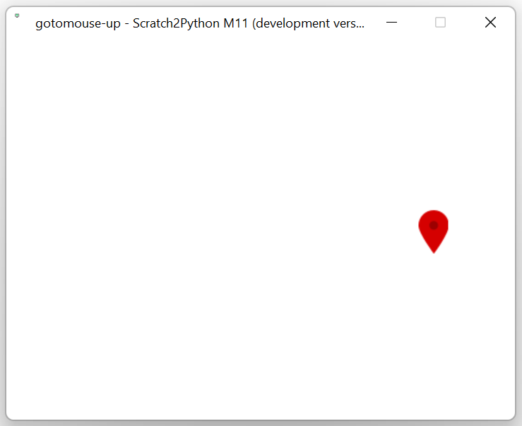

Scratch2Python is a Python program allowing you to run Scratch projects in Python. It is still being worked on, and far from done.

A screenshot of the latest release running on Linux Mint
A screenshot of the latest release running on Windows 11
Block support
Scratch2Python supports the following blocks (listed by opcode):
- events_whenflagclicked
- motion_gotoxy
- control_wait
- motion_setx and motion_sety
- motion_changexby and motion_changeyby
- control_forever
- motion_goto (mouse only)